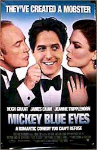
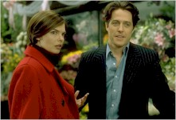
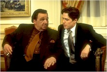
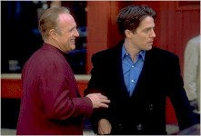

Contents | Features | Reviews | Books | Archives | Store |
 |
|
| Movie Credits | Buy It! |
Mickey Blue Eyes
Review by Carrie Gorringe
Posted 20 August 1999
|  |
Directed
by Kelly Makin Starring
Hugh Grant, Written
by
Adam Scheinman |
Mickey
Blue Eyes is primarily concerned with answering the
following question: cana veddy, veddy proper English auctioneer named Michael
Felgate (Grant) and the girl of his dreams, the lovely New Yorker Gina Vitale
(Tripplehorn), find true happiness?
Well,
under normal circumstances, the answer might be yes, except for one slightly
sticky wicket; in this case, the adhesive on the wicket is the consistency of
super glue .Gina’s papa, Frank Vitale (Caan), is what is commonly referred to
as a “made man,” and there’s no suffix of “self” to precede it or to
soften the consequences. Frank
is a member of the Graziosi Crime Family, headed by the quietly malevolent
“Uncle” Vito (Young), affectionately known as “The Butcher,” whose
belligerent and paranoid son fancies himself an artist (Graziosi Junior, living
proof of the rare virtues to be found in the practice of nepotism, devises
artistic atrocities full of unintentional contradiction ripped full-canvas from
the genius of Renaissance masters). Against the wishes of his bride-to-be and
his own good intentions, Michael is about to experience his own rebirth as a
money launderer and as a thug from Kansas City named Mickey Blue Eyes, as he
tries to hide from an offended Uncle Vito and to hide the truth from his fiancée,
who had extracted a promise from him never to become involved in the
“family” business. If Michael ends up merely a floater in the East River, he
should consider himself fortunate under the circumstances.
However,
as the film was attempting to answer this question, it is all too obvious that
certain individuals had forgotten to ask themselves another question long before
the cameras had started rolling: why isn’t this comedy amusing, apart from the
odd inspired tag line? Deciphering the second question is at once simple and
painful, as one recognizes the waste of talent that represents the fallout from
the inability or the refusal to ask. As a satire, Mickey Blue Eyes has
several disadvantages going against it, among them its second-out-of-the-gate
status, which makes comparisons between it and Harold Ramis’ Mafia send-up, Analyze
This, unavoidable. Mickey Blue Eyes really, really wants us to like
it, and the usual excuses for failure generally associated with satirizing a
criminal organization, especially
one connected in the public’s eye with a particular ethnic group, without
causing grave offense (pun intended) don’t apply here (and if, as a filmmaker,
you’re obsessively concerned with offending people in the name of creating a
satire, then -- a gentle suggestion -- perhaps Greek tragedy might be more to
your liking). The film has great performances and a solid premise (Burt Young,
in particular, projects an overwhelming aura of thinly-veiled ruthlessness). So
why does Mickey Blue Eyes feel as if it is nothing more than a series of
gifted actors trapped within a dishwater-thin script and fighting to escape? The
central problem boils down to the filmmakers’ excessive reliance upon the
actors and the premise to carry weak plotting and eviscerated satire to the
level of high comedy. Moreover, the script veers, like an inexperienced
traveler, too far into the realm of tragedy; for about twenty minutes at least,
the film actually reverses its trajectory and turns into a drama , thereby
causing the film to permanently blunt its comedic edge; Director Makin, who is
not unfamiliar with the necessities of comedic films (he directed Kids In the
Hall: Brain Candy), should have detected the stench of defeat in this script
long before the cameras started rolling.
This
film not only veers awkwardly between weak comedy and even weaker tragedy, but
too often the film leans heavily upon Grant’s patented upper-class naïve Brit
schlemiel persona to keep the film afloat, not to mention some fairly rancid
rip-offs from other films, such as the titty-tweaking bit snatched from Austin
Powers’ showdown with the fembots (this duplication should be less than a
coincidence, since Grant’s long-time significant other, Elizabeth
Hurley, is the co-producer of Mickey Blue Eyes and the former Mrs. Austin
Powers, and if that’s the extent of a film’s comedic heights, then you know
the film is DOA from frame one). The
much-publicized scene in which Papa Vitale attempts to convert (contort?)
Michael’s Oxbridge accent into Brooklynese en route to lunch with some of
Graziosi’s thugs plays itself out less smoothly in context than as a discrete
segment, because by the time it appears in the film, the wear marks in the
script have long since started to show through. Unfortunately, the outcome of Grant’s one-arm-behind-his-back
attempt at salvation is not unlike attempting to suspend concrete blocks from a
wire-coat hanger. There are too many defects in Mickey Blue Eyes for
Grant’s charm, compelling though it can be in the right setting, to act as a
sufficient counterweight to the bumbling around him.
Now that his and Liz’ production company, Simian Films, have released
two mediocrities in succession (the first being the unintentionally hilarious
evil-doctor melodrama Extreme Measures, which achieved the impossible
feat of making Coma seem like a deep theoretical meditation by
comparison), maybe they’ve gotten the carbon out of their creative systems and
might actually come up with a script to match the quality of their casting.
Had
Mickey Blue Eyes been given both a head start and a decent lease on life
from the beginning, it might have had a chance at being considered mildly
amusing rather than the most ungainly of attempts to satirize the mob, but
instead the comedic paralysis that infects Mickey Blue Eyes simply causes
the film to sink into the doldrums in comparison with Harold Ramis’
unflinching, manic comic vision for Analyze This.
In one word: Fuhgeddaboutit!
Contents | Features | Reviews
| Books | Archives | Store
Copyright © 1999 by Nitrate Productions, Inc. All
Rights Reserved.